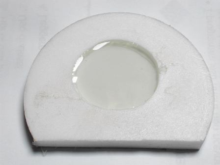
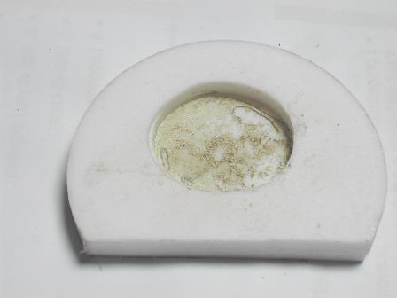
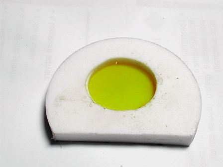

Il mistero del colorante blù del gel di silice continua... -"Come primaaa, più di primaaaa...", cantava una volta Tony Dallara!
La pulce nell'orecchio che mi ha suggerito il bravo Paolo Gifh ha dato i suoi frutti: per essere sicuri che il ferro derivasse veramente dal pigmento blù e non da qualche altra parte, mi ha indirettamente consigliato di fare una prova in bianco.
L'ho fatta e siamo d'accapo!
Ho appunto rifatto (e anche con maggior cura) la medesima procedura vista precedentemente di attacco del gel di silice con acido fluoridrico e ripresa del residuo secco con HCl, sulla cui soluzione fare poi il test per il ferro o altro eventuale.
Ho preso stavolta SOLO granellini incolori, senza quelli colorati: se il colorante è il catione ferro, in questo campione in teoria non dovrebbe esserci!
Qui sotto si vede la soluzione fluoridrica prima di essere concentrata e tirata a secco, e stavolta non è verde. Un piccolo buon segno!

Una volta arrivati a secco... ecco la prima sorpresa: un bel residuo inaspettato, color beige.

Aggiungo HCl sperando che NON diventi giallo e invece... giallo come un mandarino cinese!

Mannaggia, c'è ferro anche stavolta, quel colore lì ormai è un'ossessione e lo conosco bene.
...ho fatto le prove del ferro svogliatamente, sapendo già che sarebbero venute positivissime.
Conclusione: il ferro E' nel gel di silice, indipendentemente se sia colorato o meno.
Per sapere le cose con esattezza bisognerebbe fare una analisi quantitativa come si deve e vedere se nei granelli blù c'è PIU' ferro rispetto a quelli incolori.
Naturalmente un'analisi di questo tipo esula completamente dalle mie possibilità, e pertanto dichiaro ufficialmente "sospeso" (non archiviato!) il caso, in attesa di future informazioni che ci illuminino su questo piccolo giallo del gel di silice colorato.
(Prima di chiudere bottega e sistemare la vetreria mi sono levato un ultimissimo scrupolo: ho fatto la prova in bianco anche sull'acido fluoridrico, pur sapendo che era puro e del tutto esente da ferro... come effettivamente era!).
La saga continua...
4 commenti